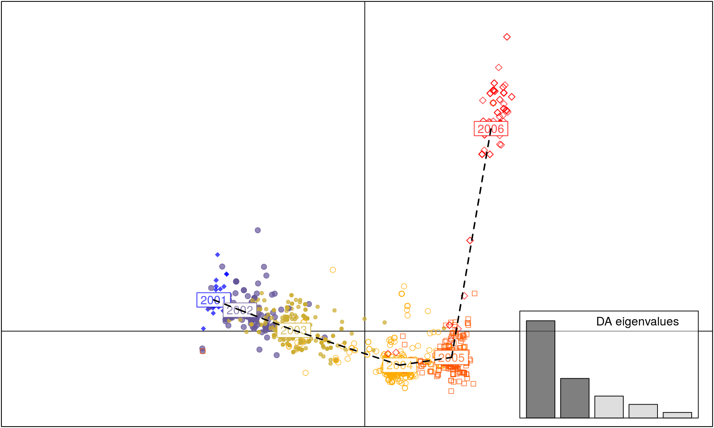
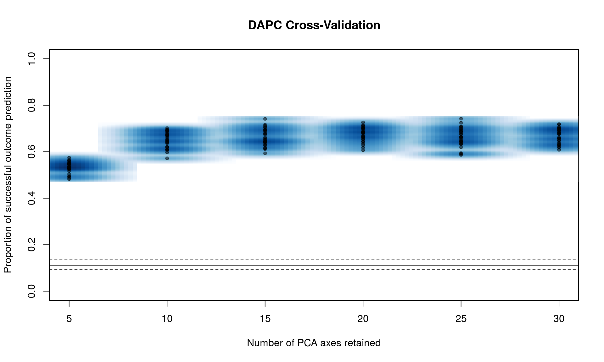
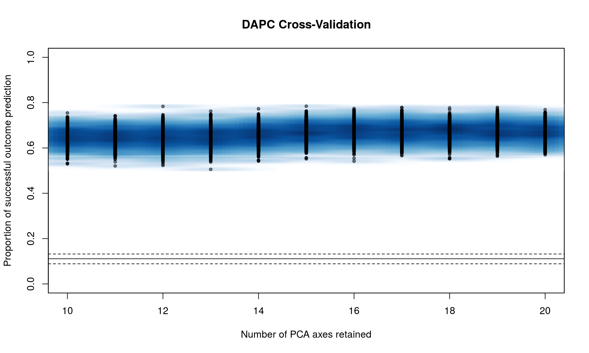

Often we want to infer population structure by determining the number of clusters (groups) observed without prior knowledge. Several approaches can be used to infer groups such as for example K-means clustering, Bayesian clustering using STRUCTURE, and multivariate methods such as Discriminant Analysis of Principal Components (DAPC) (Pritchard, Stephens & Donnelly, 2000; Jombart, Devillard & Balloux, 2010; Grünwald & Goss, 2011). A STRUCTURE-like approach assumes that markers are not linked and that populations are panmictic (Pritchard et al., 2000). To use model-free methods K-means clustering based on genetic distance or DAPC are more convenient approaches for populations that are clonal or partially clonal. Here we explore DAPC further.
DAPC was pioneered by Jombart and colleagues (Jombart et al., 2010) and can be used to infer the number of clusters of genetically related individuals. In this multivariate statistical approach variance in the sample is partitioned into a between-group and within- group component, in an effort to maximize discrimination between groups. In DAPC, data is first transformed using a principal components analysis (PCA) and subsequently clusters are identified using discriminant analysis (DA). This tutorial is based on the vignette written by Thibaut Jombart. We encourage the user to explore this vignette further. The vignette can also be opened within R by executing adegenetTutorial("dapc").
We will use the seasonal influenza dataset H3N2 data containing 1903 isolates genotyped for 125 SNPs located in the hemagglutinin segment. This dataset as well as the dapc() function is part of the adegenet package.
# DAPC requires the adegenet package. Let's load this package:
library("adegenet")
data(H3N2) # load the H3N2 influenza data. Type ?H3N2 for more info.
pop(H3N2) <- H3N2$other$epid
dapc.H3N2 <- dapc(H3N2, var.contrib = TRUE, scale = FALSE, n.pca = 30, n.da = nPop(H3N2) - 1)
scatter(dapc.H3N2, cell = 0, pch = 18:23, cstar = 0, mstree = TRUE, lwd = 2, lty = 2)
The dapc() arguments we used refer to:
var.contrib this is set to TRUE, meaning that we want to retain the variables contributing to the analysis in our output. We will use this later to see which loci are responsible for separating populations.center this is set to FALSE, indicating that we do not want the data to be rescaled so the mean = 0.n.pca is the number of axes retained in the Principal Component Analysis (PCA). By default, it is set to NULL.n.da is the number of axes retained in the Discriminant Analysis (DA). By default, it is set to NULL.It is important to set
n.pca = NULLwhen you analyze your data because the number of principal components retained has a large effect on the outcome of the data. See the section below for a statistical method called cross- validation as an aid for choosingn.pca
The scatter() function is part of the ade4 package and plots results of a DAPC analysis.
As you can see, each year between 2001 to 2005 is a cluster of H3N2 strains separated by axis 1. In contrast, axis 2 separates the strains observed in the 2006 cluster from the clusters observed during 2001-5, indicating that the strains observed in 2006 are genetically distinct.
Next, let’s assess if there are alleles that most differentiate the 2006 cluster from those in other years.
It looks like SNPs at position 399 and 906 are involved. Let’s check this further by looking at allele frequencies by year:
temp <- seploc(H3N2) # seploc {adegenet} creates a list of individual loci.
snp906 <- tab(temp[["906"]]) # tab {adegenet} returns a matrix of genotypes
snp399 <- tab(temp[["399"]])
# The following two commands find the average allele frequencies per population
(freq906 <- apply(snp906, 2, function(e) tapply(e, pop(H3N2), mean, na.rm = TRUE)))## 906.c 906.t
## 2001 0.000000000 1.0000000
## 2002 0.000000000 1.0000000
## 2003 0.000000000 1.0000000
## 2004 0.000000000 1.0000000
## 2005 0.002155172 0.9978448
## 2006 0.616071429 0.3839286## 399.c 399.t
## 2001 0.000000000 1.0000000
## 2002 0.000000000 1.0000000
## 2003 0.000000000 1.0000000
## 2004 0.001848429 0.9981516
## 2005 0.002079002 0.9979210
## 2006 0.357142857 0.6428571Note that a new allele appeared in 2005 for SNP locus 906 and 2004 for locus 399 separating populations along axis 2.
# First, set the plotting parameters
# mfrow = number of columns, rows
# mar = plot margin size
# las = axis label style (3: always vertical)
par(mfrow = c(1, 2), mar = c(5, 4, 4, 0) + 0.1, las = 3)
matplot(freq906, pch = c("c", "t"), type = "b",
xlab = "year", ylab = "allele frequency", main = "SNP # 906",
xaxt = "n", cex = 1.5)
axis(side = 1, at = 1:6, lab = 2001:2006)
matplot(freq399, pch = c("c", "t"), type = "b",
xlab = "year", ylab = "allele frequency", main = "SNP #399",
xaxt = "n", cex = 1.5)
axis(side = 1, at = 1:6, lab = 2001:2006)# Now we reset the plotting parameters to default
par(mfrow = c(1, 1), mar = c(5, 4, 4, 2) + 0.1, las = 0)This plot nicely illustrates the effect of mutation, followed by selection or drift in the seasonal H3N2 influenza virus.
Above we showed a nice example of a story that shows how two loci can drastically influence an epidemic. Next we will spend some time establishing what the appropriate number of principal components (PC) is for the analysis. It is important to carefully choose the correct number of PCs so as to include most sources of variation explained by an appropriate number of PCs retained. One way of ensuring that you have selected the correct number of PCs is to do cross-validation. This is a procedure in which you leave out a certain percentage of your data, run DAPC, and then see if the data that was left out is correctly placed into the population.
Since the H3N2 data set is quite large, we will use Phytophthora ramorum data from nurseries in California and Oregon (Goss et al., 2009) and forests in Curry County, Oregon (Kamvar et al., 2015). These data represent the Sudden Oak Death epidemic in Curry County, OR from 2001-2014 separated into different watershed regions. In Kamvar et al. (2015), the “Hunter Creek (HunterCr)” population was shown to be the result of a second introduction, likely from nurseries. Part of the evidence to support this conclusion came from DAPC results. Here, we will recreate the process of cross validation and reporting.
If we run the function xvalDapc() with default parameters, it will run 30 replicates of cross-validation for a number of PCs less than the total number of alleles in the data. This is a good way to get an idea of where to focus more intense cross-validation runs:
By default
xvalDapc()needs two parameters: 1. The genotype matrix, 2. The population factors.
##
## This is a genclone object
## -------------------------
## Genotype information:
##
## 98 multilocus genotypes
## 729 diploid individuals
## 5 codominant loci
##
## Population information:
##
## 3 strata - SOURCE, YEAR, STATE
## 9 populations defined -
## Nursery_CA, Nursery_OR, JHallCr_OR, ..., Winchuck_OR, ChetcoMain_OR, PistolRSF_OR
You can see that we have a peak around 15 PC. From here, we can narrow the search by specifying the number of PC to try with n.pca and centering it around 15, and doing 1000 replicates each (Note, this will take a long time).
Windows users: change parallel to “snow”.
set.seed(999)
system.time(pramx <- xvalDapc(tab(Pram, NA.method = "mean"), pop(Pram),
n.pca = 10:20, n.rep = 1000,
parallel = "multicore", ncpus = 4L))
## user system elapsed
## 109.964 4.516 33.861We can see that it’s basically a flat line all the way. If we take a look at the object, we see that 16 PCs give us the highest percent of correctly predicted subsamples with the lowest error.
## [1] "Cross-Validation Results"
## [2] "Median and Confidence Interval for Random Chance"
## [3] "Mean Successful Assignment by Number of PCs of PCA"
## [4] "Number of PCs Achieving Highest Mean Success"
## [5] "Root Mean Squared Error by Number of PCs of PCA"
## [6] "Number of PCs Achieving Lowest MSE"
## [7] "DAPC"## $`Median and Confidence Interval for Random Chance`
## 2.5% 50% 97.5%
## 0.08877822 0.11112549 0.13205190
##
## $`Mean Successful Assignment by Number of PCs of PCA`
## 10 11 12 13 14 15 16
## 0.6476968 0.6461921 0.6444716 0.6471279 0.6575571 0.6681401 0.6721343
## 17 18 19 20
## 0.6716012 0.6713644 0.6725124 0.6674652
##
## $`Number of PCs Achieving Highest Mean Success`
## [1] "19"
##
## $`Root Mean Squared Error by Number of PCs of PCA`
## 10 11 12 13 14 15 16
## 0.3541510 0.3556648 0.3575714 0.3547137 0.3443211 0.3337825 0.3297427
## 17 18 19 20
## 0.3304602 0.3304979 0.3294658 0.3344430
##
## $`Number of PCs Achieving Lowest MSE`
## [1] "19"
##
## $DAPC
## #################################################
## # Discriminant Analysis of Principal Components #
## #################################################
## class: dapc
## $call: dapc.data.frame(x = as.data.frame(x), grp = ..1, n.pca = ..2,
## n.da = ..3)
##
## $n.pca: 19 first PCs of PCA used
## $n.da: 8 discriminant functions saved
## $var (proportion of conserved variance): 0.989
##
## $eig (eigenvalues): 890.7 214.8 99.55 58.37 49.21 ...
##
## vector length content
## 1 $eig 8 eigenvalues
## 2 $grp 729 prior group assignment
## 3 $prior 9 prior group probabilities
## 4 $assign 729 posterior group assignment
## 5 $pca.cent 38 centring vector of PCA
## 6 $pca.norm 38 scaling vector of PCA
## 7 $pca.eig 33 eigenvalues of PCA
##
## data.frame nrow ncol
## 1 $tab 729 19
## 2 $means 9 19
## 3 $loadings 19 8
## 4 $ind.coord 729 8
## 5 $grp.coord 9 8
## 6 $posterior 729 9
## 7 $pca.loadings 38 19
## 8 $var.contr 38 8
## content
## 1 retained PCs of PCA
## 2 group means
## 3 loadings of variables
## 4 coordinates of individuals (principal components)
## 5 coordinates of groups
## 6 posterior membership probabilities
## 7 PCA loadings of original variables
## 8 contribution of original variablesWe also have a DAPC object that we can plot comparable to figure 4 in Kamvar et al. (2015):
scatter(pramx$DAPC, col = other(Pram)$comparePal, cex = 2, legend = TRUE,
clabel = FALSE, posi.leg = "bottomleft", scree.pca = TRUE,
posi.pca = "topleft", cleg = 0.75, xax = 1, yax = 2, inset.solid = 1)We can see that this shows the clear separation of Hunter Creek from the rest of the epidemic, providing evidence that this population arose from a separate introduction.
DAPC is a wonderful tool for exploring structure of populations based on PCA and DA without making assumptions of panmixia. Thus, this technique provides a robust alternative to Bayesian clustering methods like STRUCTURE (Pritchard et al., 2000) that should not be used for clonal or partially clonal populations.
DAPC analysis is inherently interactive and cannot be scripted a priori. Please refer to the vignette written by Thibaut Jombart for a more interactive analysis.
Goss EM., Larsen M., Chastagner GA., Givens DR., Grünwald NJ. 2009. Population genetic analysis infers migration pathways of phytophthora ramorum in us nurseries. PLoS Pathog 5:e1000583. Available at: http://dx.doi.org/10.1371/journal.ppat.1000583
Grünwald NJ., Goss EM. 2011. Evolution and population genetics of exotic and re-emerging pathogens: Novel tools and approaches. Annual Review of Phytopathology 49:249–267. Available at: http://www.annualreviews.org/doi/abs/10.1146/annurev-phyto-072910-095246?journalCode=phyto
Jombart T., Devillard S., Balloux F. 2010. Discriminant analysis of principal components: A new method for the analysis of genetically structured populations. BMC genetics 11:94. Available at: http://www.biomedcentral.com/1471-2156/11/94
Kamvar Z., Larsen M., Kanaskie A., Hansen E., Grünwald N. 2015. Spatial and temporal analysis of populations of the sudden oak death pathogen in oregon forests. Phytopathology 105:982–989. Available at: http://dx.doi.org/10.1094/PHYTO-12-14-0350-FI
Pritchard JK., Stephens M., Donnelly P. 2000. Inference of population structure using multilocus genotype data. Genetics 155:945–959. Available at: http://www.genetics.org/content/155/2/945.abstract